| 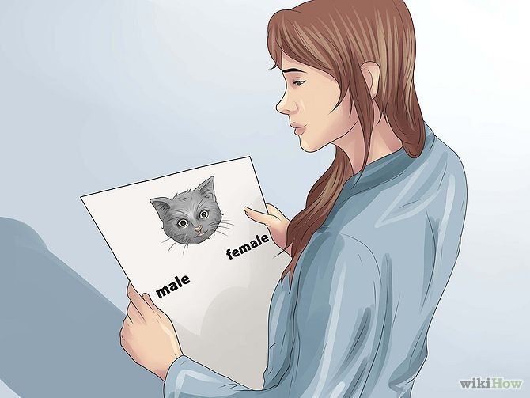 |
1. Find out the cat's gender
and decide if you want a male or female. Male cats
can be more outgoing but more likely to pee on things. . |
| 2. Name
your kitty. You can use any name you like. |
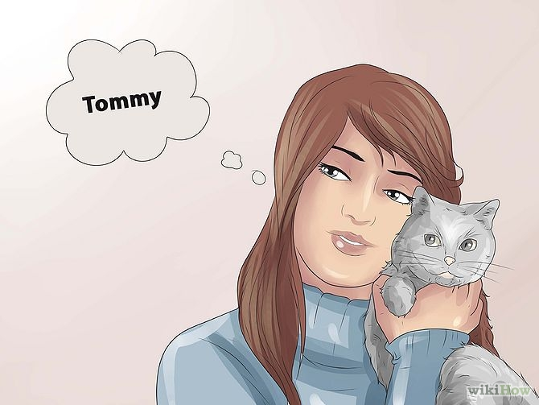 |
| 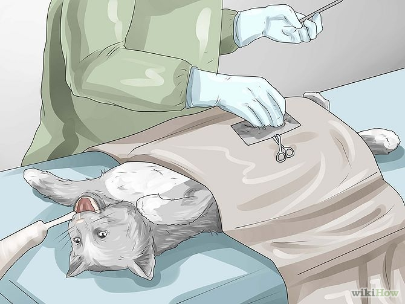 |
3. Unless you want to breed your cat,
which should be done only with exceptional pedigreed
cats and requires a lot of work (including to keep
your cat from breeding untimely) , spay or neuter
it. The cat will be tamer and spay/neutering
decreases the risk of your new cat developing
certain cancers. Most vets do not allow you to
spay or neuter your kitty until they weigh about
two pounds. |
| 4. Buy
a litter box. Remember to remove solids (feces)
daily. Empty it thoroughly when it smells bad overall.
When you have to refill the litter box, pour 2–3
inches (5.1–7.6 cm) in.
|
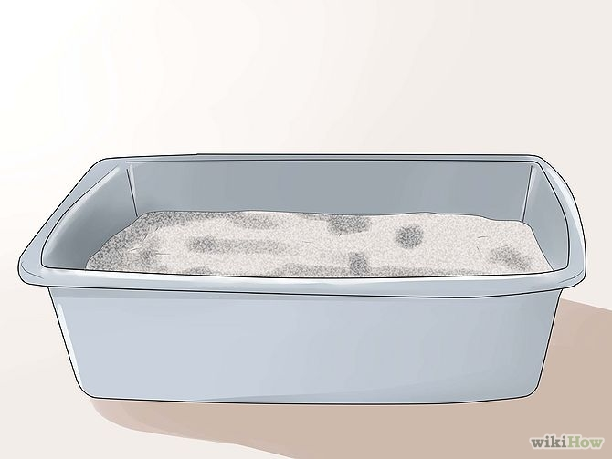 |
| 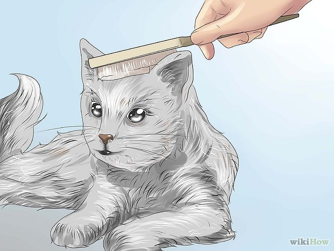 |
5. Groom. Depending on the breed,
you may need to brush your kitty more often,
but all breeds need to be brushed at least weekly.
With Persians, it's 3-4 times a week, with Sphinx
(bald) cats, you need to give them 1 bath a week
(this is because their hair oils tend to build up
on the skin). Be sure to look up your breed to see
what you should do. Short or medium hair mongrel
cats need brushing weekly or so to eliminate tangles
and reduce spare hair that would rub off on furniture
or form hairballs; they do not need bathing unless
something unusually foul gets on them. |
| 6. If you
want a cat that is low-maintenance, you should get
American Shorthair, or any other kind of short-haired
cat. Short haired cats usually only need 1 brushing a
week |
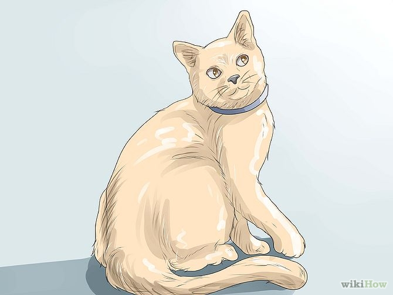 |
| 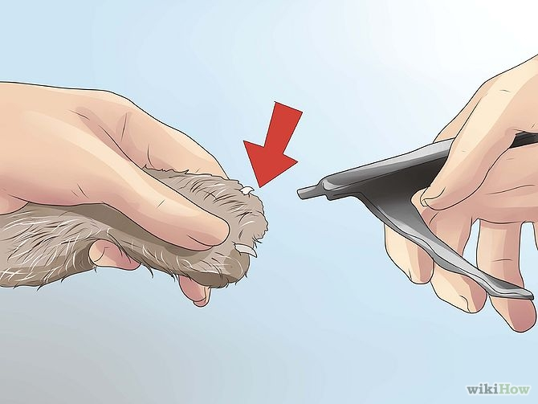 |
7. Remember to clip the claws
every week, particularly if the cat does not
regularly go outside where it might wear down
the nails with vigorous activity. Put the clippers
perpendicular to the claws. The "quick" (finger tip)
of the nail should not be cut. See where it is on
light-colored nails and avoid it; on dark-colored
nails, cut a little of the nail tip at a time if it
is greatly overgrown and the quick will draw back
over time. |
| 8. Buy cat food
(canned or dry is fine, though dry food will help
keep your cat's teeth healthy), a food bowl, and a
water dish. You can find a food/water dish in any
pet store. Feed your cat 2-3 times a day. You can
share little bits of many kinds of human food with
your cat but feed it in its plate or on the floor so
it doesn't learn to share uninvited. |
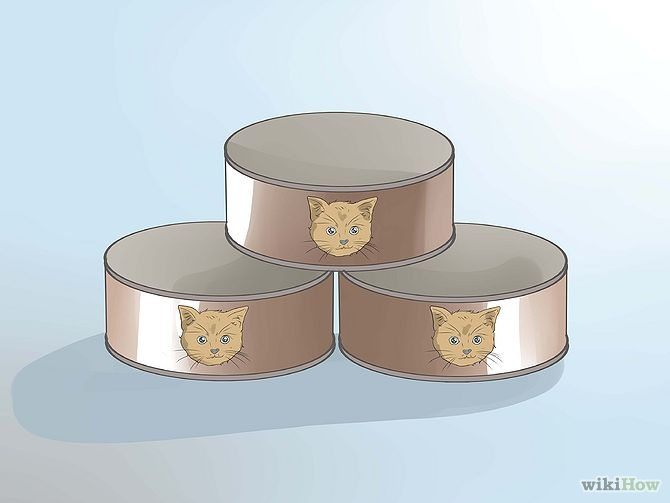 |
| 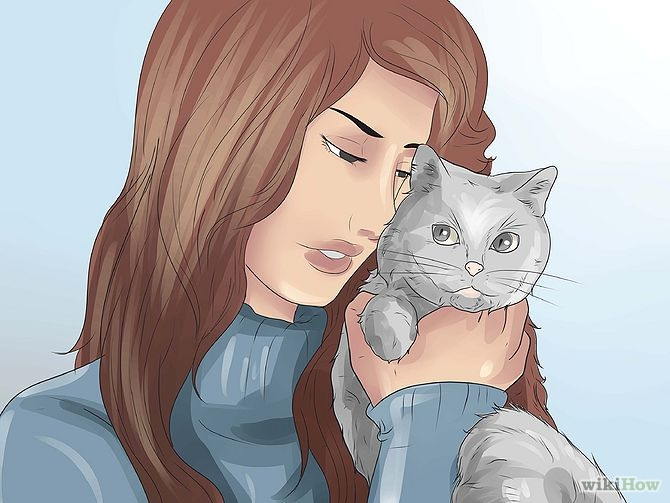 |
9. Show affection. Love your cat
and your cat will love you, too. |
| 10 .If you
live in any flea-worthy area you can buy a flea
collar to kill/repel fleas. Another option,
which your veterinarian will most likely recommend,
is to apply a flea repellent treatment (Frontline and
Trifexis are two popular options). |
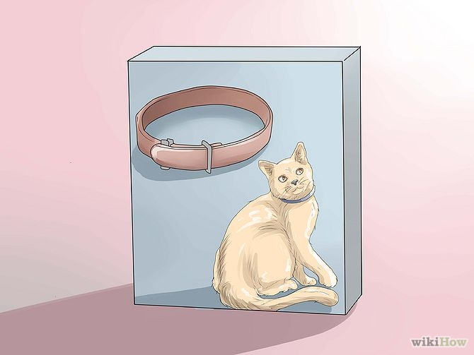 |
| 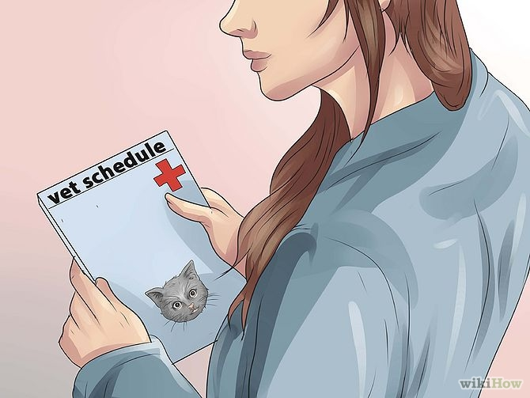 |
11. Remember to get vaccinations from
your local veterinarian. |
| 12. Love
and raise your kitty! |
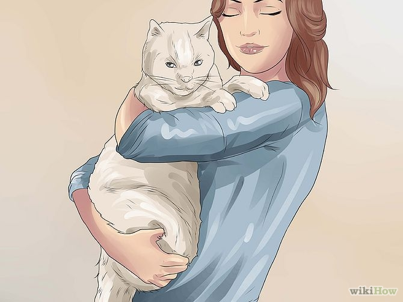 |
| 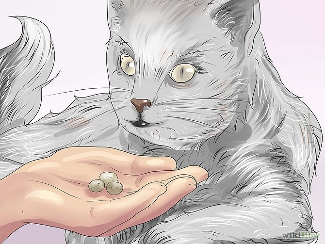 |
13. Make sure you give it treats once in a while! |